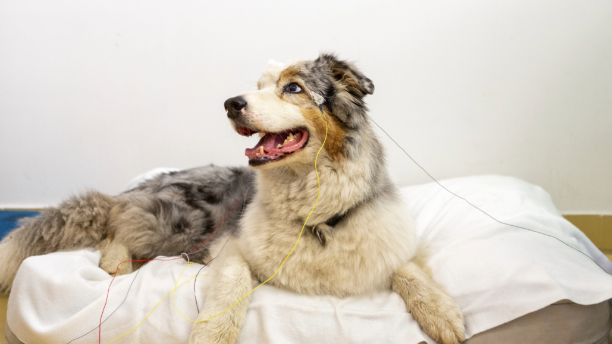
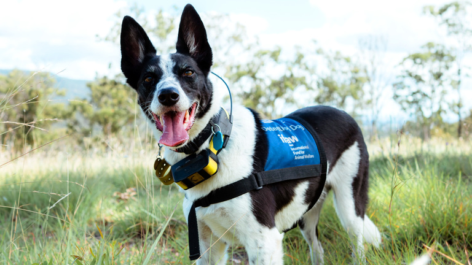

Bienvenidos al Refugio!

Conoce a todos nuestros cachorros y encontra a tu nuevo compañero de aventuras

Contamos con un excelente equipo de veterinarios y especialistas que te ayudaran a cuidar de tus cachorros como se debe y darles la calidad de vida que merecen
